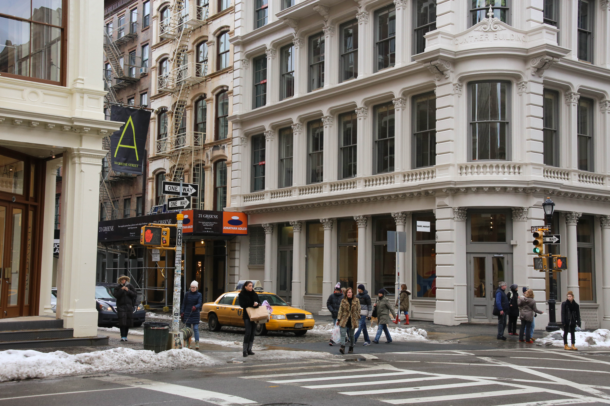
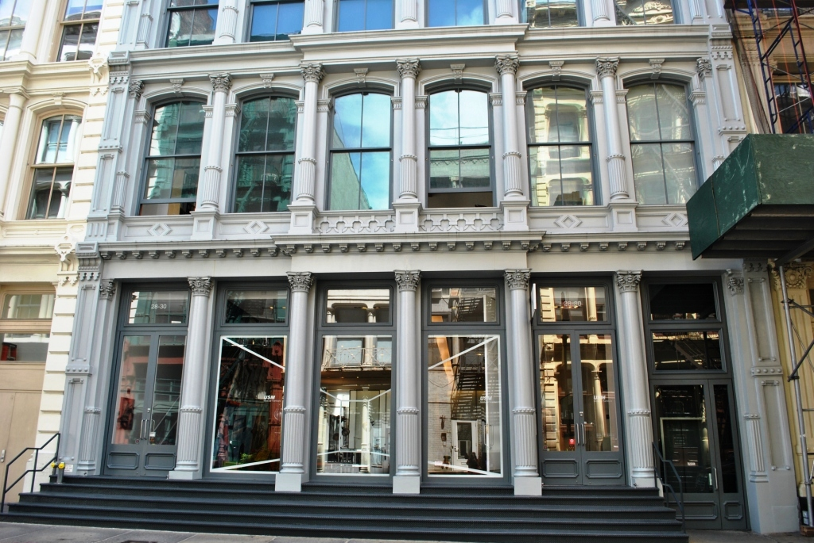

THE WHOLE CITY. ALL FIVE BOROUGHS.
Manhattan to Staten Island. Brooklyn to the Bronx.Explore the actual city, with Queens just across the river.
MANHATTAN / BROOKLYN / QUEENS / BRONX / STATEN ISLAND
Drag to orbit. Scroll to zoom.Search an address or place your spawn pin.
Search an address or pick a spot on the map. Arrivals use a nearby street.
Double-click a street for quick travel.
Find a car and take a delivery job. The city is yours to explore.
KNOW THE STREETS
Controller: left stick moves / steers, triggers accelerate and brake / reverse, A enters a car, X brakes, Y takes a job. Right stick looks around. Right bumper switches street, aerial and city views.
Drive carefully to keep police attention down. Stop at the orange marker to finish a delivery. Earnings save on this device.
TAKE A BREATHER
THE ACTUAL CITY
Explore all five boroughs. The citywide source contains 1,083,529 surveyed building features. Detailed geometry loads around you as you walk, drive, or travel to another neighborhood.


Cars, pedestrians and delivery jobs are game elements. Source metadata and the complete spatial index are included in the project. Geometry and imagery stream directly from NYC’s public services. NYC Open Data terms.